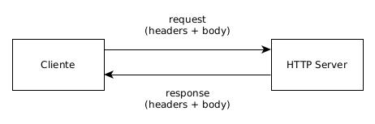
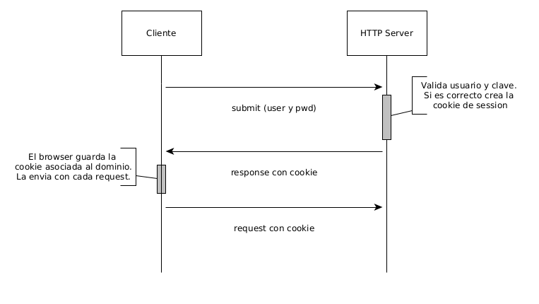

Enrique Molinari
¿Qué es HTTP?
¿Donde han utilizado ya este protocolo?
Hiper Text Transfer Protocol
Para realizar comunicaciones entre Servidores Web y clientes (browsers y otros). Cliente - Servidor.
Cara vez que ingresamos una URL en un navegador establecemos una comunicación HTTP. Cuando utilizamos Ajax o cuando submiteamos un Form.
Una Típica Comunicación HTTP
Request/Response
HTTP es stateless
Cada request es independiente del otro. No hay memoria donde retenga que paso en request anteriores.
El localStorage, las cookies o las sessiones se pueden utilizar para mantener estado.
¿Qué es HTTPS?
Hiper Text Transfer Protocol Secure
Los datos se envían encriptados.
Hoy es una buena práctica que cualquier sitio web utilice https.
Métodos HTTP
GET: Para obtener datos del servidor. Cada visita a una página web es un request GET. Nunca utilizarlo para enviar o modificar datos. Es idempotente.
Idempotencia: La ejecución repetida de una petición con los mismos parámetros sobre un mismo recurso tendrá el mismo efecto siempre.
POST: Para enviar datos al servidor. Ej: Submitear un formulario. No es idempotente.
PUT: Para modificar datos existentes. Idempotente.
DELETE: Para borrar datos existentes. Idempotente.
Métodos HTTP
Es sumamente importante utilizar correctamente los métodos http. Es nuestra responsabilidad como desarrolladores. En protocolo en sí no nos prohibe utilizar GET en operaciones con side-effects.
Si submitieramos una compra y dicho request fuera GET podríamos sin querer (Ej: apretando F5), submitearla N veces. Si es POST el browser nos avisa con un warning. Porque el browser sabe que POST no es una operación idempotente.
HTTP Headers
GET Request:
GET /my-host/pagina.html HTTP/1.1
Host: myhost.org
User-Agent: un clienteResponse:
HTTP/1.1 200 OK
Date: Sat, 15 Oct 2021 14:28:02 GMT
Server: Apache
Last-Modified: Tue, 01 Oct 2021 20:18:22 GMT
ETag: "51142bc1-7449-479b075b2891b"
Accept-Ranges: bytes
Content-Length: 29769
Content-Type: text/html
(body: requested web page)
HTTP Headers (cont)
GET: Header + Body Opcional.
POST: Header + Body.
PUT: Header + Body.
DELETE: Header + Body Opcional.
HTTP Headers
POST Request:
POST /my-host/curso HTTP/1.1
Host: myhost.org
User-Agent: un client
Content-Type: application/json
{
"curso": "Taller de Tecnología y Producción de Software",
"año": "5to"
}
HTTP Response Codes
1xx: informativo (Request recibido)
2xx: Éxito (Success). Ej: 200 - OK
3xx: Redirect. Ej: 301 Moved, 304 Cached Version.
4xx: Request Incompleto. Ej: 401 Unauthorized.
5xx: Error en el servidor. Ej: 500 Internal Server Error.
HTTP Cookies
Las cookies son datos estructurados de la forma clave=valor. Son creados en el Web Server (aunque tambien se pueden crear con javascript) y enviados hacia el cliente, quién lo almacena para enviar con cada nuevo request.
De esta forma fue posible generar la idea de estado en aplicaciones Web.
HTTP Cookies
Típica secuencia de creación de cookie de session
HTTP Cookies
Agregar cookies en response, con Javalin:
private Handler login() {
return ctx -> {
...
response.setHeader("Set-Cookie",
"token=" + token + "; HttpOnly");
...
}
}
HTTP Cookies
Response:
HTTP/1.1 200 OK
Date: Sat, 15 Oct 2021 14:28:02 GMT
Server: Apache
Set-Cookie: token=abc123; HttpOnly;
...